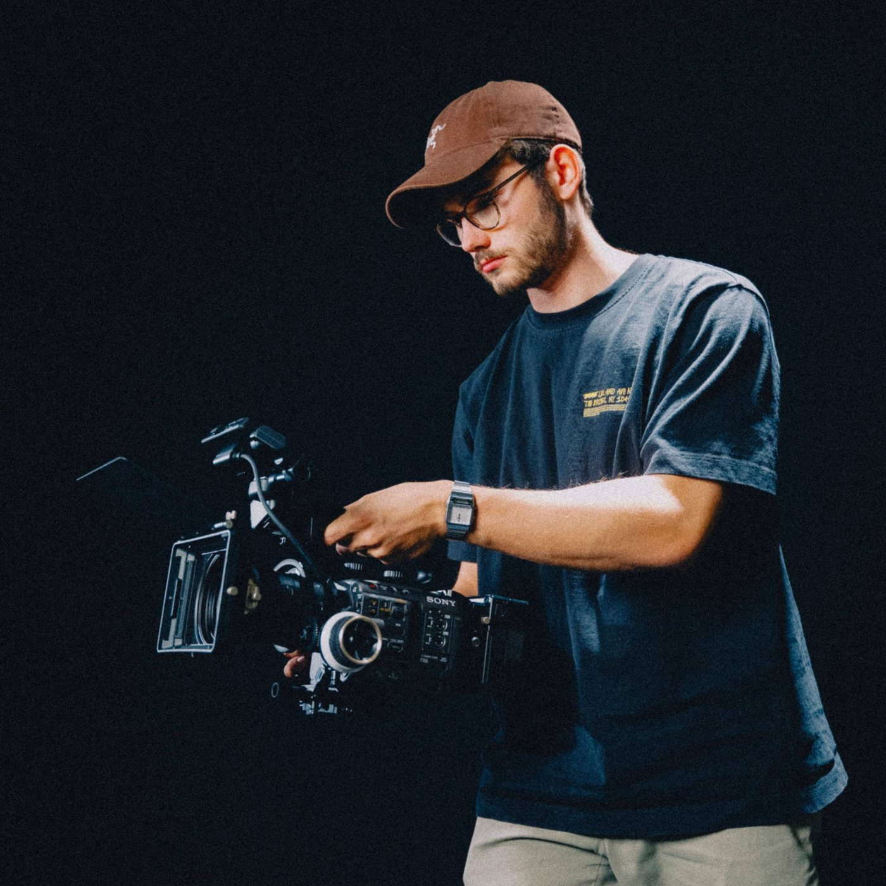
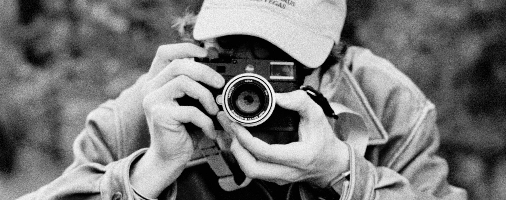

Kolja Gerstenkorn
Selected clients
Film
Commercials, brand & social
Photo
Campaigns, fashion & portrait


Ian Hopper × VW ID.7Campaign photography


Berlin Fashion WeekFashion photography · Published in several newspapers


Ford Nugget · LofotenCampaign photography
Early work
Documentary & sports photography, Montana


About
I make films and images for brands and startups. I plan, shoot and edit, and scale from a one-person crew to a ten-person production, depending on what the project needs.
I started at 16 in Montana, with a documentary made through the Big Sky Documentary Film Festival’s youth fellowship and a sports photography award from the University of Montana. At 18 I founded Super 16 Production. Since then I’ve worked for PUMA, VW, BVB, Warner Bros. and the NFL, and in 2025 my work reached more than 30 million views.
Over the past few years I’ve worked with startups like Hyro in Sydney, Dryft in San Francisco and Lio, backed by Y Combinator and a16z. Today I work with different startups as a freelancer, mostly B2B tech, advising them on their brand and how to position themselves. Creators often don’t understand the product, and operators can’t tell the story. I like working right between the two.
My rule is simple: if something looks impressive but doesn’t serve the story, it goes.

